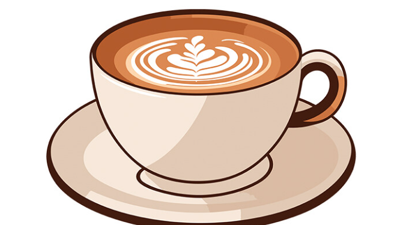

BELOW IS A WEEK PLANNER FOR A TYPICAL WEEK
List of things planned for each day of the week
- Reading
- Taking a Break
- Working out
- Chest
- Push Ups
- Barbell bench press
- Arms
- Abs
- Cardio
- Cooking
- Productivity
- Family Time
MONDAYS
This day is dedicated to reading only. Looking for something instersing

TUESDAYS
This is a day to take a short break and visit place or simply take a walk

WEDNESDAYS
This is a workout day
Parts of the body to workout

THURDAYS
This is a day to take a short break and visit place or simply take a walk

FRIDAYS
A day to practice my cooking skills. I KNOJ loves to eat some homemade food
SATURDAYS
This is a good day to look for any productivity activity to keep myself busy
Remember is all fictional not anything real!!
SUNDAYS
This is a good day to look for any productivity activity to keep myself busy
Remember is all fictional not anything real!!

Below you can reach us out on the provided contacts for any feedback, comment or recommendations
Contact Us on the below